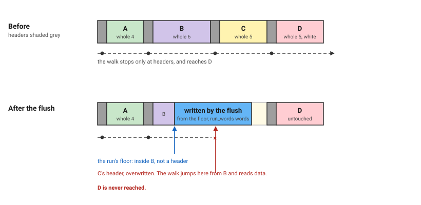

This follows on from What the Specifications Did Not Say, which was about auditing specifications I had not written. This one is about a specification I did not write either, and should have.
One lemma runs through the whole post. It is called flush_preserves_white, and it says that merging free blocks does not disturb the live ones.
I let something else write the specification
Coalescing removes objects. Absorbed blocks stop being members of the walk, and one merged block stands where several used to. So for the second attempt I wrote down what coalescing preserves, in English.
Whole size is wosize plus one, for the header. The total whole size of all blue objects is the same before and after. No two adjacent blue objects remain. And from the end-to-end theorem, coalescing must not touch a white object.
Those four sentences are right. I handed them to an assistant and asked for the F*.
What came back
The last sentence became this.
val flush_preserves_white (g: heap) (run_end: nat)
(first_blue: U64.t) (run_words: nat) (fp: U64.t)
: Lemma
(requires run_at first_blue run_words run_end /\ ...)
(ensures
(let g1 = fst (flush_blue g first_blue run_words fp) in
forall (y: obj_addr).
Seq.mem y (objects zero_addr g) /\ is_white y g ==>
Seq.mem y (objects zero_addr g1) /\ is_white y g1 /\
wosize_of_object y g1 == wosize_of_object y g))The conclusion is right. Every white object of g is still a white object after the flush, same size.
One piece of vocabulary before the hypothesis. An object's header sits one word below the object's own address, so hd_address first_blue is the header of the first block in the run. Call it the run's floor. The flush writes from the floor upward, for run_words words.
Here is run_at.
let run_at (first_blue: U64.t) (run_words: nat) (run_end: nat) : prop =
run_words > 0 ==>
(U64.v first_blue >= U64.v mword /\
U64.v first_blue < heap_size /\
U64.v first_blue % U64.v mword == 0 /\
U64.v first_blue - U64.v mword + run_words * U64.v mword == run_end)A range check, an alignment check, and a sum. Any aligned address in the heap can be first_blue, and any number that makes the sum work can be run_words.
Ask the question from the last post. Who establishes this? The caller does, by choosing two numbers that add up. The heap never has to agree that either of them means anything.
The counterexample
So the run can begin and end mid-object.

run_at holds. But the floor is not any block's header. It sits part way into B. The flush writes a fresh header there and keeps writing for run_words words, straight over C's header.
Now run the walk from the bottom. B's header sits below the floor, so the flush left it alone. The walk reads it and jumps by B's size, which lands exactly where C's header used to be. That word is now part of what the flush wrote.
From there the walk is reading data as a header. Wherever it goes next, it is not D.
D is white. D was an object of g. D is not an object of g1. The conclusion is false.
Three lemmas came back with this shape. I caught the first myself. The other two an agent found, with this same counterexample, confirmed against the solver.
The fix
One clause.
walk_visits g zero_addr (hd_address (first_blue <: obj_addr))walk_visits g s a runs the same steps objects does. Start at s. Read the header. Jump by that many words. Repeat. It asks one thing: does that process land on a?
The walk only ever stops at headers. A, then B, then C, then D. Every other address in the heap is passed over, because the walk crosses a whole block in one jump.
So the clause says the run's floor is a header the walk reaches. Not an aligned address. Not an address in range. A place the walk actually stops.
In the picture the floor is part way into B, which the walk jumps over. The hypothesis fails, so that heap is no longer one the lemma claims anything about.
The conclusion never changed. Only the set of heaps did.
What I should have done
Written the specification myself.
The English was fine. The gap opened in the translation, at the one place I would have had to look anyway: what first_blue and run_words are allowed to be.
That is the whole content, not a detail. A specification is a claim about which heaps you mean. A vague hypothesis does not weaken a theorem. It falsifies it.
Why this gap opens here
The object list is not stored anywhere. objects reads a header, takes the size, and jumps that far. So the list is computed from the bytes the collector is writing.
One header write changes which objects exist. Merge two blocks and the absorbed one is not deleted. The walk stops landing on it.
The walk runs upward, from the lowest address to the highest. So "below" means at a lower address, already visited, and "above" means not reached yet.
That is why the proofs do not stay local. Whether D survives is not a question about D. It is a question about every header below it, because those are what the walk read on its way there. Break C's header and D is gone, though nothing touched D.
Merging is safe: the merged block's whole size is the sum of the absorbed ones, so it ends where the last one ended and the walk rejoins. But that argument only starts if the run began on a real boundary. Arithmetic does not give you that.
None of this is about F*. Model a heap this way in any prover and the same thing happens.
Non-vacuous, composes, false
Two checks are standard. The vacuity check catches contradictory hypotheses: replace the body with () and the conclusion with False, and it should fail. Checking that a lemma composes at its call site catches a mismatched statement.
flush_preserves_white passed both.
Its hypotheses were satisfiable, so the vacuity probe failed as required. And it composed, because there was only one call site, inside the walk.
But the walk knows more than it says. At that point the cursor has just stepped onto an object, so the run's floor is a real boundary. The walk never passes that fact to the lemma. The lemma never asks for it. It simply happens to hold.
So the lemma was true of every heap it was ever applied to, and false of heaps its own hypotheses permit. Both checks pass. The contract is still wrong.
The check that would have caught it is the old one. For each condition in a requires, ask what establishes it. Then ask whether it says anything about the heap, or only about numbers.
A division of labour
Code and specification are joint work. An agent can write either, and often should. Who holds the pen is not the interesting question.
The loop is. Someone writes a specification. Both sides then attack it, looking for a heap that satisfies every hypothesis and breaks the conclusion. The specification is ready when neither the human nor the agent can find one.
Only then does proving start, and that part can go to whoever is cheaper.
Refuting needs one counterexample. Proving needs the whole argument. That asymmetry is why attacking comes first.
Two caveats. An agent told to prove will weaken a hypothesis to go green, so it never edits a val and everything it closes gets a vacuity check. And a fixed point is not correctness. It only means nobody has found the next counterexample yet. I found the first of the three. The other two surfaced only because somebody kept looking after I had stopped.
The agent's best output was not the lemmas it closed. It was the write-up. Ask for a reasoned report, not a diff.